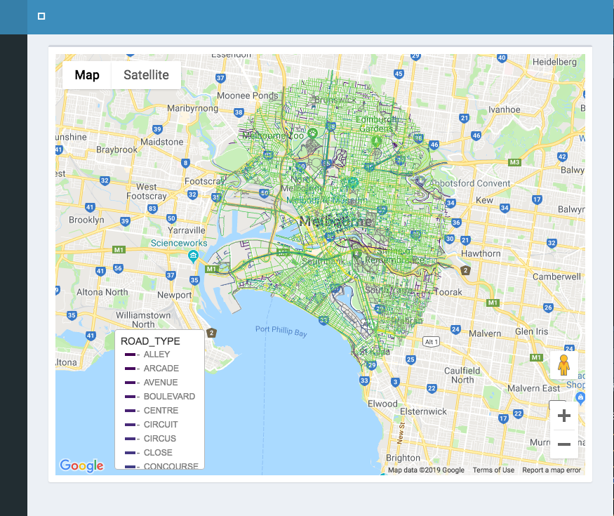

Google Map
David Cooley
2019-10-28
google_map.Rmdlibrary(mapdeck)
library(googleway)As of version 0.2.2 you can add mapdeck layers to a googleway Google Map.
How, you ask?
Very simple. You add Mapdeck’s dependencies to the map
googleway::google_map() %>%
mapdeck::add_dependencies()Then you can add any of the layers
googleway::google_map() %>%
mapdeck::add_dependencies() %>%
mapdeck::add_path(
data = roads
, stroke_colour = "ROAD_TYPE"
, legend = T
)
If you’re using shiny you also need to add mapdeck_dependencies() to the UI
library(shiny)
library(shinydashboard)
library(mapdeck)
library(googleway)
ui <- dashboardPage(
dashboardHeader(),
dashboardSidebar(),
dashboardBody(
mapdeck::mapdeck_dependencies()
, box(
width = 12
, google_mapOutput(
outputId = "map"
, height = "600"
)
)
)
)
server <- function(input, output) {
#set_key("GOOGLE_KEY")
output$map <- renderGoogle_map({
google_map() %>%
mapdeck::add_dependencies() %>%
mapdeck::add_path(
data = mapdeck::roads
, stroke_width = 10
, stroke_colour = "ROAD_TYPE"
, legend = TRUE
)
})
}
shinyApp(ui, server)